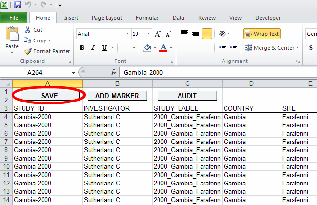

WWARN Excel Template
New data must be transformed to the proper format prior to being uploaded to the server. This can be accomplished by making use of the WWARN Excel Template file.
Download Template (v0.8.2)Once data has been populated in the Excel template the requisite file to be uploaded to the server can be generated by clicking on the "SAVE" button as seen below:
This will prompt for a location to save the file to in a tab-delimited text format. Alongside this several log files will be created:
The tab-delimited file produced can now be uploaded to the server for processing.